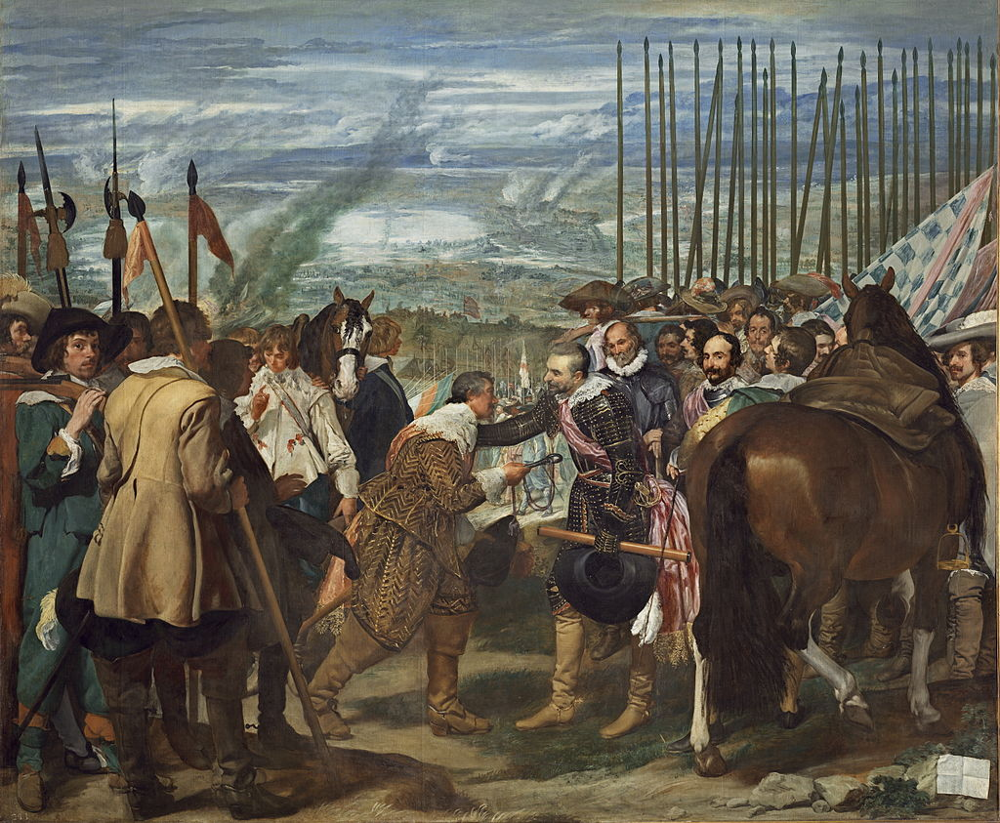

<head>
<meta charset="UTF-8" />
<meta name="keywords" content="drawing, painting" />
<meta name="description" content="drawings by Sunjy" />
<title>Sunjy</title>
<link rel="shortcut icon" type="image/x-icon" href="../../mImages/mCommon/favicon.ico" media="screen" />
<link rel="stylesheet" type="text/css" href="../../mCsses/mCommon/mCssA.css" />
<link rel="stylesheet" type="text/css" href="../../mCsses/mCommon/mCssB.css" />
<link rel="stylesheet" type="text/css" href="../../mCsses/mCommon/mCssC.css" />
<link rel="stylesheet" type="text/css" href="../../mCsses/mCommon/mCssD.css" />
<link rel="stylesheet" type="text/css" href="../../mCsses/mContent/mCssA.css" />
<link rel="stylesheet" type="text/css" href="../../mCsses/mContent/mCssB.css" />
<link rel="stylesheet" type="text/css" href="../../mCsses/mContent/mCssC.css" />
<link rel="stylesheet" type="text/css" href="../../mCsses/mContent/mCssD.css" />
</head>
<script type="text/javascript" src="../../mScripts/mContent/mContentAA.js" /></script>
<script type="text/javascript" src="../../mScripts/mContent/mContentAB.js" /></script>
<script type="text/javascript" src="../../mScripts/mContent/mContentAC.js" /></script>
<script type="text/javascript" src="../../mScripts/mContent/mContentAD.js" /></script>
<script type="text/javascript"></script> 
<script type="text/javascript">
document.write('<div class="mImgAbsolute"></div>');
/*
document.write('<p class="mFontSizeBColor" />From a white paper...</p>');
document.write('<table class="center"><tr><td>');
document.write('');
document.write('</td></tr></table>');
*/
</script>


<script type="text/javascript">
document.write('<p class="mFontSizeBColor" />The Surrender of Breda</p>');
document.write('<p class="mFontSizeSColor" />“The Surrender of Breda” by Diego Velázquez depicts a military victory in 1624 during the Eighty Years War.<br><br>The Eighty Years’ War or “Dutch War of Independence” (1568–1648) was a revolt of the Seventeen Provinces of what are today the Netherlands, Belgium, and Luxembourg against Philip II of Spain, the sovereign of the Habsburg Netherlands.<br><br>Velázquez shows the end of the “Siege of Breda,” which was one of Spain’s last significant victories in the Eighty Years’ War.<br><br>Velázquez composed “The Surrender of Breda” into two halves, which included the Dutch leader Justinus van Nassau, on the left and Spanish Genoese general, Spinola on the right.<br><br>He presents the Spanish as a potent force but also shows facial expressions of fatigue, providing a personal view of the reality to war.<br><br>Philip IV of Spain commissioned the painting for his palace of Buen Retiro. It was displayed in the “Hall of Realms” with nineteen other paintings.<br><br>This picture by Velázquez intended to glorify the military accomplishments and acquisition by the Spanish.<br><br>It was completed during 1635, inspired by Velázquez’s visit to Italy with Ambrogio Spinola, the Genoese-born Spanish general who conquered Breda.<br><br>The painting depicts the surrender of the key of Breda from the Dutch to the Spanish.<br><br>Velázquez detailed many individuals in this magnificent painting with the background showing the battle scene.<br><br>The surrender takes place in the foreground, with the leading individuals placed clearly in the center.<br><br>The focus of the artwork is in the foreground, where the exchange of the keys is shown. In the background, the smokey sky shows evidence of destruction and death.<br><br>Velázquez used effective perception and aerial techniques to capture the size of the scene.<br><br>This painting is much lighter and brighter in colors in comparison to Velázquez’s other works of art.<br><br>Importantly, he had taken a trip to Italy to study Renaissance art before this painting. In addition to the color techniques from Italy and especially Venice, he also gained insights into the depiction of space, perspective, and light.<br><br>This painting is considered one of Velázquez’s best works, and his artistic abilities introduced new techniques to the Baroque style.<br><br>The “Surrender of Breda” as one of the finest works by Velázquez. Unfortunately, shortly before the finish of this painting, Spain was one of the European countries that fell into economic decline.<br><br>Eighty Years’ War<br><br>The Eighty Years’ War (1568–1648) was a revolt of the Seventeen Provinces against Philip II of Spain. After the initial stages, Philip II regained control over most of the rebelling provinces.<br><br>However, under the leadership of the exiled William the Silent, the northern regions continued their resistance. They eventually were able to oust the Habsburg armies, and in 1581 they established the Republic of the Seven United Netherlands.<br><br>The war continued in other areas, although the heartland of the republic was no longer threatened; this included the beginnings of the Dutch Colonial Empire. Spain and the major European powers recognized the Dutch Republic in 1609 at the start of the Twelve Years’ Truce.<br><br>Hostilities broke out again around 1619, as part of the broader Thirty Years’ War.<br><br>An end was reached in 1648 when the Dutch Republic was definitively recognized as an independent country no longer part of the Holy Roman Empire. The Peace of Münster is sometimes considered the beginning of the Dutch Golden Age.<br><br>Siege of Breda<br><br>The Siege of Breda (1624–25) resulted in Breda, a Dutch fortified city, falling into the control of the Army of Flanders.<br><br>The siege was part of a plan to isolate the Republic from its hinterland and to economically choke the Dutch Republic.<br><br>The siege captured the attention of European leaders and, along with other battles, played a part in the Spanish army regaining the formidable reputation it had previously held.<br><br>In the latter stages of the combined Eighty and Thirty Years’ wars that had greatly strained Spanish resources, Breda was lost to the Dutch after a four-month siege.<br><br>In the 1648 Treaty of Westphalia that ended the Thirty and Eighty Years’ wars, it was ceded to the Dutch Republic.<br></p>');
document.write('<table class="center" /><tr><td>');
document.write('<br>The Eighty Years’ War or “Dutch War of Independence” (1568–1648) was a revolt of the Seventeen Provinces of what are today the Netherlands, Belgium, and Luxembourg against Philip II of Spain, the sovereign of the Habsburg Netherlands.<br><br>Velázquez shows the end of the “Siege of Breda,” which was one of Spain’s last significant victories in the Eighty Years’ War.<br><br>Velázquez composed “The Surrender of Breda” into two halves, which included the Dutch leader Justinus van Nassau, on the left and Spanish Genoese general, Spinola on the right.<br><br>He presents the Spanish as a potent force but also shows facial expressions of fatigue, providing a personal view of the reality to war.<br><br>Philip IV of Spain commissioned the painting for his palace of Buen Retiro. It was displayed in the “Hall of Realms” with nineteen other paintings.<br><br>This picture by Velázquez intended to glorify the military accomplishments and acquisition by the Spanish.<br><br>It was completed during 1635, inspired by Velázquez’s visit to Italy with Ambrogio Spinola, the Genoese-born Spanish general who conquered Breda.<br><br>The painting depicts the surrender of the key of Breda from the Dutch to the Spanish.<br><br>Velázquez detailed many individuals in this magnificent painting with the background showing the battle scene.<br><br>The surrender takes place in the foreground, with the leading individuals placed clearly in the center.<br><br>The focus of the artwork is in the foreground, where the exchange of the keys is shown. In the background, the smokey sky shows evidence of destruction and death.<br><br>Velázquez used effective perception and aerial techniques to capture the size of the scene.<br><br>This painting is much lighter and brighter in colors in comparison to Velázquez’s other works of art.<br><br>Importantly, he had taken a trip to Italy to study Renaissance art before this painting. In addition to the color techniques from Italy and especially Venice, he also gained insights into the depiction of space, perspective, and light.<br><br>This painting is considered one of Velázquez’s best works, and his artistic abilities introduced new techniques to the Baroque style.<br><br>The “Surrender of Breda” as one of the finest works by Velázquez. Unfortunately, shortly before the finish of this painting, Spain was one of the European countries that fell into economic decline.<br><br>Eighty Years’ War<br><br>The Eighty Years’ War (1568–1648) was a revolt of the Seventeen Provinces against Philip II of Spain. After the initial stages, Philip II regained control over most of the rebelling provinces.<br><br>However, under the leadership of the exiled William the Silent, the northern regions continued their resistance. They eventually were able to oust the Habsburg armies, and in 1581 they established the Republic of the Seven United Netherlands.<br><br>The war continued in other areas, although the heartland of the republic was no longer threatened; this included the beginnings of the Dutch Colonial Empire. Spain and the major European powers recognized the Dutch Republic in 1609 at the start of the Twelve Years’ Truce.<br><br>Hostilities broke out again around 1619, as part of the broader Thirty Years’ War.<br><br>An end was reached in 1648 when the Dutch Republic was definitively recognized as an independent country no longer part of the Holy Roman Empire. The Peace of Münster is sometimes considered the beginning of the Dutch Golden Age.<br><br>Siege of Breda<br><br>The Siege of Breda (1624–25) resulted in Breda, a Dutch fortified city, falling into the control of the Army of Flanders.<br><br>The siege was part of a plan to isolate the Republic from its hinterland and to economically choke the Dutch Republic.<br><br>The siege captured the attention of European leaders and, along with other battles, played a part in the Spanish army regaining the formidable reputation it had previously held.<br><br>In the latter stages of the combined Eighty and Thirty Years’ wars that had greatly strained Spanish resources, Breda was lost to the Dutch after a four-month siege.<br><br>In the 1648 Treaty of Westphalia that ended the Thirty and Eighty Years’ wars, it was ceded to the Dutch Republic.<br>" />');
document.write('</td></tr></table>');
</script>


